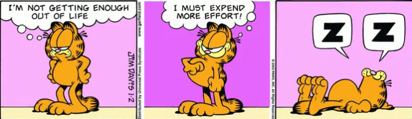
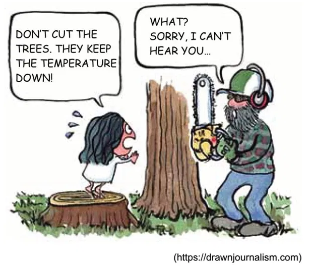

Informação do teste
O teste será composto por 12 perguntas de diferentes níveis de dificuldade.
- 4 perguntas nível A1/A2.
- 4 perguntas nível B1/B2.
- 4 perguntas nível C1/C2.
Questão 1
She ___ my best friend.
isare
am
be
Questão 2
Choose the correct sentence:
He have a car.He has a car.
He haves a car.
He having a car.
Questão 3
Translate into Portuguese:
"I am studying English every day."
Questão 4
Translate into English:
"Apesar de ter sido avisado sobre os riscos, ele decidiu continuar."
Questão 5
Translate into Portuguese:
"If I had more time, I would travel around the world."
Questão 6
Select TWO correct sentences:
She doesn’t like coffee.She don’t like coffee.
She isn’t like coffee.
She does not like coffee.
Questão 7
This is the restaurant ___ we had dinner last night.
whowhich
where
what
Questão 8
Qual o sentido correto da expressão getting enough out of?
Não está saindo o suficienteNão está comendo o suficiente
Não está estudando o suficiente
Não está aproveitando a vida o suficiente
Questão 9
O phrasal verb keep down significa:
manter vivomanter saudável
manter baixo
manter estável
Questão 10
Hardly ___ the announcement when the audience started protesting.
had the minister finishedthe minister had finished
did the minister finish
the minister finished
Questão 11
Were she ___ earlier, she might have caught the train.
to leaveleaving
to have left
left
Questão 12
His explanation was so convoluted that it only served to ___ the confusion.
clarifyexacerbate
mitigate
dissolve
Terminou?
Clique no botão abaixo para ver seu resultado.